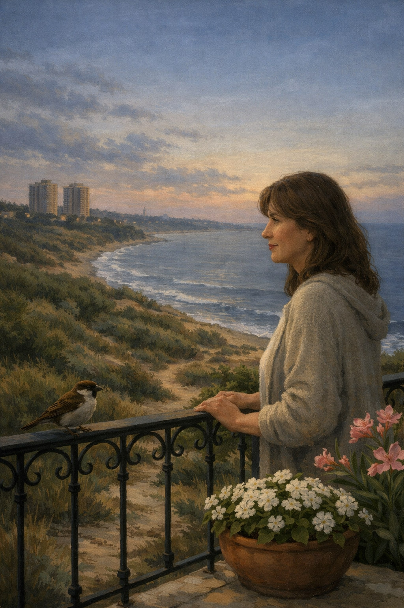

שיר על רגעי בוקר ראשונים, על חלומות שמתפזרים, ועל מחשבות יחפות שמבקשות לכתוב אותנו מחדש.
חמש בבוקר,
העולם נם.
"תמיכי לישון",
לחשה אלי מחשבה מנומנמת.
ציוץ ראשון של ציפור
משך אותי אל החלון.
חלומות הלילה
התפזרו על מפתן חלוני,
והרוח סירקה את שערי.
לבוקר טעם
של רך שרק נולד,
התחלה חדשה.
השכונה, עטופה בתנומה,
מתוכה נולדה תנועה קטנה:
מכונית עם אורות מנומנמים
יוצאת לדרך.
מחשבות יחפות
נותנות לבוקר הזה
לכתוב אותי מחדש.